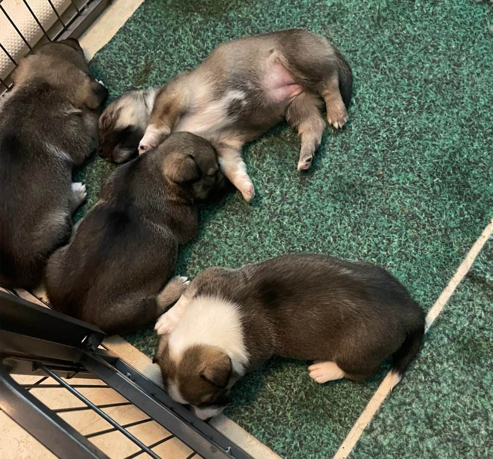

Pentuja

A-pentue (2 narttua, 2 urosta) s. 5.12.2025
u. Kipinätassun Asko
u. Kipinätasson Arvi
n. Kipinätassun Adalmiina
n. Kipinätassun Aada
Minulleko oma Kipinätassu?
Pentueita meille syntyy vain tarkkaan harkituista yhdistelmistä. Pentueiden suunnittelussa lähtökohtanani on aina se, että haluaisin myös itselleni pennun juuri tuosta yhdistelmästä.
Kasvattamani göötit ovat usein yhdistelmistä, joissa pentueen molemmilla vanhemmilla on jonkin verran kokemusta ja mahdollisia näyttöjä harrastuksista. Etsin kasvateilleni ensisijaisesti koteja, joissa ollaan valmiita sitoutumaan koiran kanssa aktiiviseen elämään läpi sen elämän. Kasvattajana kuitenkin olen tukena myös silloin, jos kaikki ei sujukaan suunnitelmien mukaan. Odotan, että kasvattini viedään kattaviin terveystutkimuksiin niiden täyttäessä kaksi vuotta.
Jos olet kiinnostunut hankkimaan pennun minulta, otathan yhteyttä sähköpostitse. Ensimmäisessä yhteydenotossa haluan kuulla kuka olet, millainen koti ja ympäristö sinulla olisi kasvatilleni tarjota sekä mielelläni myös siitä, miksi juuri göötti ja miksi juuri minun kasvattini. Koiriani ja kasvattejani voi päästä myös tapaamaan sovitusti.